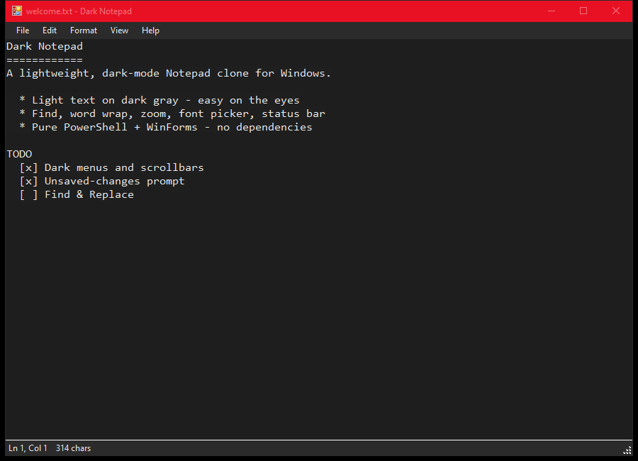

Dark Notepad: the dark mode Notepad for Windows
A free, open-source, lightweight text editor with light text on a dark gray background. No installer bloat, no telemetry, just a fast Notepad alternative that's easy on the eyes.


Live demo
This is an in-browser replica of the Windows app so you can feel the interface. The real app is a native Windows program; this page runs entirely in your browser and nothing is uploaded.
Tip: try Ctrl+F, toggle word wrap, or open a text file from your computer.
Features
True dark mode
Light text on a dark gray editor, with matching dark menus, status bar and scrollbars.
Everything Notepad has
New, Open, Save, Undo/Redo, Find with match case, Select All, Time/Date, Word Wrap and Font picker.
Safe by default
Prompts before discarding unsaved changes. Saves clean UTF-8 without a BOM.
Status bar & zoom
Live line, column and character count, plus Ctrl+Plus / Ctrl+Minus zoom.
Zero dependencies
Pure PowerShell and WinForms, running on the Windows PowerShell 5.1 that is already on your PC.
Private & open source
No network access, no telemetry. MIT licensed, so read it, fork it, improve it.
Screenshot

Install Dark Notepad on Windows
Option 1: one-line install (recommended)
Open PowerShell and run. It installs for your user only, with no admin rights, and adds a Start Menu shortcut.
irm https://raw.githubusercontent.com/248Tech/DarkNotepad/main/install.ps1 | iex
Option 2: download the release
Grab DarkNotepad-x.y.z.zip from the latest release, extract it, and double-click DarkNotepad.vbs (or run install.ps1).
Option 3: run from source
git clone https://github.com/248Tech/DarkNotepad.git cd DarkNotepad powershell -STA -ExecutionPolicy Bypass -File .\DarkNotepad.ps1
Uninstall any time with .\install.ps1 -Uninstall.
Keyboard shortcuts
| Action | Shortcut |
|---|---|
| New / Open / Save / Save As | Ctrl+N Ctrl+O Ctrl+S Ctrl+Shift+S |
| Undo / Redo | Ctrl+Z Ctrl+Y |
| Find | Ctrl+F |
| Insert time/date | F5 |
| Zoom in / out | Ctrl+Plus Ctrl+Minus |
Frequently asked questions
Is Dark Notepad free?
Yes. It is free and open source under the MIT license.
Does it work on Windows 10 and Windows 11?
Yes. It runs on Windows PowerShell 5.1, which ships with both.
Does it collect any data?
No. The app makes no network connections and has no telemetry.
Why does Windows SmartScreen warn me?
The scripts are not code-signed. The complete source is on GitHub so you can read exactly what runs. You can also verify the SHA-256 checksum published with each release.
How is it different from Windows Notepad's dark mode?
Dark Notepad is a tiny, portable, hackable script with a fixed dark gray look and no account, update or AI prompts. It's also a clean, readable example of a themed WinForms app in PowerShell.